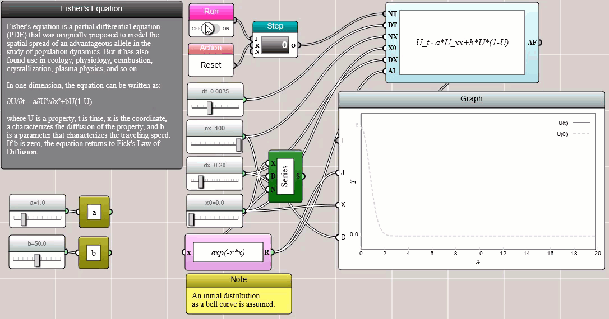
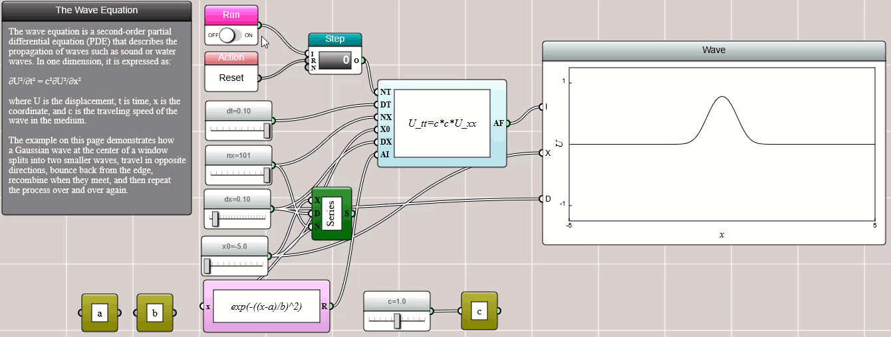
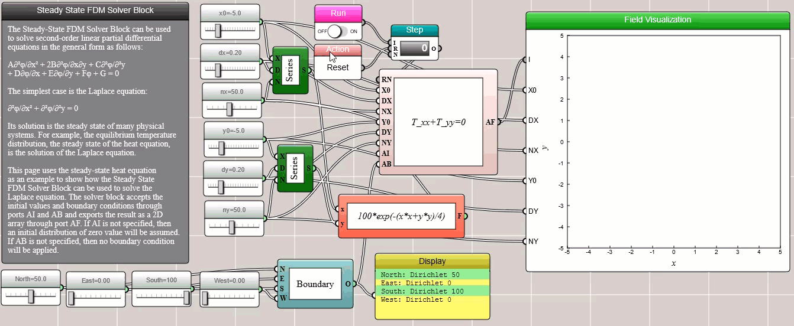
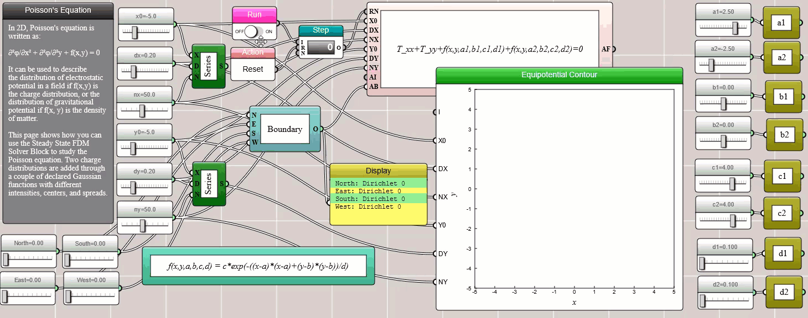
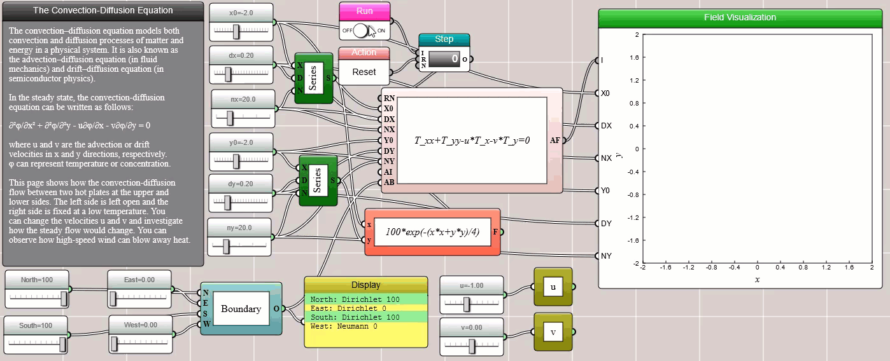
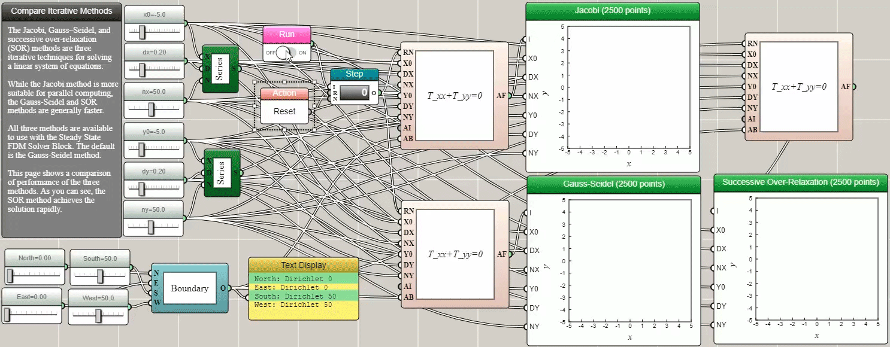

Partial Differential Equation Solvers
Fisher's equation, the wave equation, heat, Poisson, and convection-diffusion — solved visually with iFlow.
We have shown that iFlow can be used to solve ordinary differential equations (ODEs). This article shows that it can also be used to solve some partial differential equations (PDEs). Unlike an ODE, a PDE is a differential equation that involves partial derivatives of a multivariate function. PDEs are more common than ODEs in the real world (which is why they are so important in science and engineering). In fact, one may think of an ODE as a special case of a PDE.
There are multiple numerical methods for solving PDEs. For example, the finite difference methods (FDM) solve them by approximating derivatives with finite differences. Both the spatial and temporal domains can be discretized into a finite number of small steps, and the value of the solution at these discrete points is approximated by solving a system of linear equations.
One-Dimensional Time-Dependent PDEs
In iFlow, the Transient State FDM Solver (1D) block can be used to solve time-depedent linear PDEs in one dimension.
Fisher's Equation
Fisher's equation is a first-order linear PDE for modeling reaction-diffusion systems. In one dimension, it can be written as:
∂φ/∂t = a∂²φ/∂²x + bφ(1-φ)
where a is a parameter that characterizes the diffusion of the property φ and b is a parameter that characterizes the reaction speed. If b is zero, the equation returns to Fick's Law of Diffusion for pure diffusion.

Wave Equation
The wave equation is a second-order linear PDE for modeling waves. In one dimension, it can be written as:
∂²φ/∂t² = c²∂²φ/∂²x
where c is the propagation speed of the wave.

Two-Dimensional Stationary PDEs
In iFlow, the Steady State FDM Solver block can be used to solve second-order linear PDEs in the general form shown as follows:
A∂²φ/∂x² + 2B∂²φ/∂x∂y + C∂²φ/∂²y + D∂φ/∂x + E∂φ/∂y + Fφ + G = 0
Typically, x and y are Cartesian coordinates and φ represents a physical property such as temperature or concentration. In the following subsections, we show how iFlow can be used to solve some of the special cases of the above PDE.
Heat Equation
When A=C and B=D=E=F=G=0, the above generic PDE is reduced to the heat equation, which is often used to model heat conduction and molecular diffusion:
∂²φ/∂x² + ∂²φ/∂²y = 0

Poisson's Equation
When A=C=1, B=D=E=F=0, and G=f(x, y), we have the Poisson's equation, which is often used to model electrostatic or gravitational fields:
∂²φ/∂x² + ∂²φ/∂²y + f(x,y) = 0

Convection-Diffusion Equation
When A=C=1, B=F=G=0, D=-u, and E=-v, we have the convection-diffusion equation, which is often used to model the combination of driven and diffusive flows:
∂²φ/∂x² + ∂²φ/∂²y - u∂φ/∂x - v∂φ/∂y = 0
where u and v are the advection or drift velocities in x and y directions, respectively.

Comparing Iterative Methods
The Jacobi, Gauss–Seidel, and successive over-relaxation (SOR) methods are three iterative techniques for solving a linear system of equations. While the Jacobi method is more suitable for parallel computing, the Gauss-Seidel and SOR methods are generally faster. All three methods are available to use with the Steady State FDM Solver Block provided in iFlow. The default is the Gauss-Seidel method. The following animation shows a comparison of performance of the three methods. As you can see, the SOR method achieves the solution rapidly. The animation shows the process as if the SOR method were about to crash, but it miraculously recovers from the seemingly chaotic trajectory to converge at the correct final state. This is an example that shows the instructiveness of algorithm visualization.
